종자기사 (2021-05-15 기출문제)
1과목: 종자생산학
1. 일대잡종 종자생산을 위한 인공교배에서 제웅에 대한 설명으로 가장 옳은 것은?
- 개화 전 양친의 암술을 제거하는 작업이다.
- 개화 전 자방친의 꽃밥을 제거하는 작업이다.
- 개화 직후 화분친의 암술을 제거하는 작업이다.
- 개화 직후 양친의 꽃밥을 제거하는 작업이다.
(정답률: 84%)

2. 고추, 무, 레드클로버 종자의 형상은?
- 난형
- 도란형
- 방추형
- 구형
(정답률: 74%)
3. 종자의 자엽 부위에 양분을 저장하는 무배유작물로만 나열된 것은?
- 벼, 밀
- 벼, 옥수수
- 밀, 보리
- 콩, 팥
(정답률: 87%)
4. ( ) 에 알맞은 내용은?
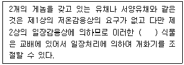
- 뇌수분형
- 종자춘화형
- 적심형
- 무춘화형
(정답률: 80%)
5. 무한화서이며 긴 화경에 여러 개의 작은 화경이 붙어 개화하는 것은?
- 단집산화서
- 복집산화서
- 안목상취산화서
- 총상화서
(정답률: 74%)
6. 제(臍)가 종자의 뒷면에 있는 것은?
- 배추
- 시금치
- 콩
- 상추
(정답률: 80%)
7. 배휴면(胚休眠)을 하는 종자를 습한 모래 또는 이끼와 교대로 층상으로 쌓아 두고, 그것을 저온에 두어 휴면을 타파시키는 방법을 무엇이라 하는가?
- 밀폐처리
- 습윤처리
- 층적처리
- 예냉
(정답률: 89%)
8. 고구마의 개화 유도 및 촉진 방법이 아닌 것은?
- 14시간 이상의 장일처리를 한다.
- 나팔꽃의 대목에 고구마 순을 접목한다.
- 고구마덩굴의 기부에 절상을 낸다.
- 고구마덩굴의 기부에 환상박피를 한다.
(정답률: 79%)
9. 채종재배 시 채종포로서 적당하지 못한 것은?
- 등숙기에 강우량이 많고 습도가 높은 지역
- 토양이 비옥하고 배수가 양호하며 보수력이 좋은 토양
- 겨울 기온이 온화하고 등숙기에 기온의 교차가 큰 곳
- 교잡을 방지하기 위하여 다른 품종과 격리된 지역
(정답률: 90%)
10. 광과 종자 발아에 대한 설명으로 옳지 않은 것은?
- 광은 종자 발아와 아무런 관계가 없는 경우도 있다.
- 종자 발아가 억제되는 광 파장은 700~750nm 정도이다.
- 종자 발아의 광가역성에 관여하는 물질은 cytochrome이다.
- 광이 없어야 발아가 촉진되는 종자도 있다.
(정답률: 75%)
11. 다음 채소 중 자가수정율이 가장 높은 것은?
- 토마토
- 오이
- 호박
- 배추
(정답률: 71%)
12. 다음 중 일반적으로 종자의 발아촉진 물질과 가장 거리가 먼 것은?
- Gibberellin
- ABA
- Cytokinin
- Auxin
(정답률: 91%)
13. 다음 중 봉지 씌우기를 가장 필요로 하지 않는 경우는?
- 교배 육종
- 원원종 채종
- 여교배 육종
- 자가불화합성을 이용한 F1채종
(정답률: 81%)
14. 물의 투과성 저해로 인하여 종자가 휴면하는 것은?
- 나팔꽃
- 미나리아재비과 식물
- 보리
- 사과나무
(정답률: 70%)
15. 중복수정에서 배유(胚乳)가 형성되는 것은?
- 정핵과 극핵
- 정핵과 난핵
- 화분관핵과 정핵
- 극핵과 화분관핵
(정답률: 80%)
16. 종자소독 약제의 처리방법으로 적절하지 않은 것은?
- 약액침지
- 종피분의
- 종피도말
- 종피 내 주입
(정답률: 84%)
17. 제웅하지 않고 풍매 또는 충매에 의한 자연교잡을 이용하는 작물로만 나열된 것은?
- 벼, 보리
- 수수, 토마토
- 가지, 멜론
- 양파, 고추
(정답률: 59%)
18. 옥수수의 화기구조 및 수분양식과 관련하여 옳은 것은?
- 충매수분
- 양성화
- 자웅이주
- 자웅동주이화
(정답률: 77%)
19. 작물이 영양생장에서 생식생장으로 전환되는 시점은?
- 종자발아기
- 화아분화기
- 유모기
- 결실기
(정답률: 90%)
20. 다음 중 교잡 시 개화기 조절을 위하여 적심을 작물로 가장 옳은 것은?
- 양파
- 상추
- 참외
- 토마토
(정답률: 68%)
2과목: 식물육종학
21. 인위적으로 반수체 식물을 만들기 위해 주로 사용하는 조직배양 방법은?
- 배배양
- 약배양
- 생장점배양
- 원형질체배양
(정답률: 77%)
22. 형질의 유전력은 선발효과와 깊은 관계가 있다. 선발효과가 가장 확실한 경우는? (단, h28는 넓은 의미의 유전력임)
- h28 = 0.34
- h28 = 0.13
- h28 = 0.92
- h28 = 0.50
(정답률: 81%)
23. 잡종강세를 이용한 F1 품종들의 장점으로 가장 거리가 먼 것은?
- 중수효과가 크다.
- 품질이 균일하다.
- 내병충성이 양친보다 강하다.
- 종자의 대량 생산이 용이하다.
(정답률: 68%)
24. 다음 중 유전자원을 수집·보전해야 할 이유로 가장 옳은 것은?
- 멘델 유전법칙을 확인하기 위함
- 다양한 육종소재로 활용하기 위함
- 야생종을 도태시키기 위함
- 개량종의 보급을 확대시키기 위함
(정답률: 89%)
25. 유전자형이 Aa인 이형접합체를 지속적으로 자가수정 하였을 때 후대집단의 유전자형 변화는?
- Aa 유전자형 빈도가 늘어난다.
- 동형접합체와 이형접합체 빈도의 비율이 1:1 이 된다.
- Aa 유전자형 빈도가 변하지 않는다.
- 동형접합체 빈도가 계속 증가한다.
(정답률: 71%)
26. 동질배수체의 일반적인 특징이 아닌 것은?
- 핵과 세포가 커진다.
- 함유성분의 변화가 생긴다.
- 발육이 지연된다.
- 채종량이 증가한다.
(정답률: 68%)
27. A/B//C 교배의 순서는?
- A와 B와 C를 함께 방임수분 함
- A와 B를 교배하여 나온 F1과 C를 교배 함
- A와 B를 모본으로 하고, C를 부본으로 하여 함께 교배 함
- B와 C를 모본으로 하고, A를 부본으로 하여 함께 교배 함
(정답률: 86%)
28. 다음 중 폴리진에 대한 설명으로 가장 옳지 않은 것은?
- 양적 형질 유전에 관여한다.
- 각각의 유전자가 주동적으로 작용한다.
- 환경의 영향에 민감하게 반응한다.
- 누적적 효과로 형질이 발현된다.
(정답률: 74%)
29. 품종퇴화를 방지하고 품종의 특성을 유지하는 방법으로 가장 거리가 먼 것은?
- 개체집단선발법
- 계통집단선발법
- 방임수분
- 격리재배
(정답률: 84%)
30. 변이 중 유전하지 않는 변이는?
- 장소변이
- 아조변이
- 교배변이
- 돌연변이
(정답률: 75%)
31. 체세포로부터 식물체가 재생되는 현상을 적절하게 설명한 것은?
- 식물의 세포분화능을 이용하는 것이다.
- 세포의 탈분화능을 이용하는 것이다.
- 식물의 생물농축형성능을 이용하는 것이다.
- 세포의 전체형성능을 이용하는 것이다.
(정답률: 80%)
32. 자가수정을 계속함으로써 일어나는 자식약세 현상은?
- 타가수정 작물에서 더 많이 일어난다.
- 자가수정 작물에서 더 많이 일어난다.
- 어느 것이나 구별 없이 심하게 일어난다.
- 원칙적으로 자가수정 작물에만 국한되어 있는 현상이다.
(정답률: 69%)
33. 식물의 화분모세포는 성숙분열 후 몇 개의 딸세포가 되는가?
- 1개
- 2개
- 3개
- 4개
(정답률: 80%)
34. 생산력 검정에 관한 설명 중 틀린 것은?
- 검정포장은 토양의 균일성을 유지하도록 노력한다.
- 계측, 계량을 잘못하면 포장시험에 따르는 오차가 커진다.
- 시험구의 크기가 클수록 시험구당 수량 변동이 커진다.
- 시험구의 반복횟수의 증가로 오차를 줄일 수 있다.
(정답률: 85%)
35. 임성회복유전자가 존재하는 웅성붙임성은?
- 집단웅성붙임성
- 개체웅성붙임성
- 이수체웅성붙임성
- 세포질유전자웅성붙임성
(정답률: 83%)
36. 감수분열 과정 중 재조합이 일어나 후대의 변이가 확대되는 단계는?
- 제1감수분열 후기, 제2감수분열 후기
- 제1감수분열 후기, 제2감수분열 전기
- 제1감수분열 전기, 제1감수분열 중기
- 제2감수분열 전기, 제2감수분열 후기
(정답률: 64%)
37. 쌍자엽식물의 형질전환에 가장 널리 이용하고 있는 유전자 운반체는?
- Ti - plasmid
- E. coli
- 바이러스의 외투단백질
- 제한효소
(정답률: 84%)
38. 피자식물에서 볼 수 있는 중복수정의 기구는?
- 난핵 × 정핵, 극핵 × 생식핵
- 난핵 × 생식핵, 극핵 × 영양핵
- 난핵 × 정핵, 극핵 × 정핵
- 난핵 × 정핵, 극핵 × 영양핵
(정답률: 84%)
39. 체세포의 염색체 구성이 2n+1 일 때 이를 무엇이라 하는가?
- 일염색체(monosomic)
- 삼염색체(trisomic)
- 이질배수체
- 동질배수체
(정답률: 84%)
40. 다음 중 일대잡종을 가장 많이 이용하는 작물은?
- 벼
- 옥수수
- 밀
- 콩
(정답률: 69%)
3과목: 재배원론
41. 이랑을 세우고 낮은 골에 파종하는 방식은?
- 휴립휴파법
- 이랑재배
- 평휴법
- 휴립구파법
(정답률: 75%)
42. 작물의 수량을 최대화하기 위한 재배이론의 3요인으로 가장 옳은 것은?
- 비옥한 토양, 우량종자, 충분한 일사량
- 비료 및 농약의 확보, 종자의 우수성, 양호한 환경
- 자본의 확보, 생력화 기술, 비옥한 토양
- 종자의 우수한 유전성, 양호한 환경, 재배기술의 종합적 확립
(정답률: 82%)
43. 작물의 내열성에 대한 설명으로 틀린 것은?
- 늙은 잎은 내열성이 가장 작다.
- 내건성이 큰 것은 내열성도 크다.
- 세포 내의 결합수가 많고, 유리수가 적으면 내열성이 커진다.
- 당분함량이 증가하면 대체로 내열성은 증대한다.
(정답률: 72%)
44. 나팔꽃 대목에 고구마 순을 접목하여 개화를 유도하는 이론적 근거로 가장 적합한 것은?
- C/N율
- G-D균형
- L/W율
- T/R율
(정답률: 67%)
45. 다음 중 벼의 적산온도로 가장 옳은 것은?
- 500~1000℃
- 1200~1500℃
- 2000~2500℃
- 3500~4500℃
(정답률: 70%)
46. 다음 중 CO2 보상점이 가장 낮은 식물은?
- 벼
- 옥수수
- 보리
- 담배
(정답률: 67%)
47. 도복의 대책에 대한 설명으로 가장 거리가 먼 것은?
- 칼리, 인, 규소의 시용을 충분히 한다.
- 키가 작은 품종을 선택한다.
- 맥류는 복토를 깊게 한다.
- 벼의 유효분얼종지기에 지베렐린을 처리한다.
(정답률: 71%)
48. 대기 오염물질 중에 오존을 생성하는 것은?
- 아황산가스(SO2)
- 이산화질소(NO2)
- 일산화탄소(CO)
- 불화수소(HF)
(정답률: 61%)
49. 내건성이 강한 작물의 특성으로 옳은 것은?
- 세포액의 삼투압이 낮다.
- 작물의 표면적/체적 비가 크다.
- 원형질막의 수분투과성이 크다.
- 잎 조직이 치밀하지 못하고 울타리 조직의 발달이 미약하다.
(정답률: 73%)
50. 다음 중 T/R율에 관한 설명으로 옳은 것은?
- 감자나 고구마의 경우 파종기나 이식기가 늦어질수록 T/R율이 작아진다.
- 일사가 적어지면 T/R율이 작아진다.
- 질소를 다량시용하면 T/R율이 작아진다.
- 토양함수량이 감소하면 T/R율이 작아진다.
(정답률: 65%)
51. 벼의 생육 중 냉해에 의한 출수가 가장 지연되는 생육단계는?
- 유효분얼기
- 유수형성기
- 유숙기
- 황숙기
(정답률: 68%)
52. 벼의 침수피해에 대한 내용이다. ( ) 에 알맞은 내용은?
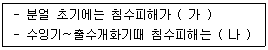
- 가 : 작다, 나 : 작아진다.
- 가 : 작다, 나 : 커진다.
- 가 : 크다, 나 : 커진다.
- 가 : 크다, 나 : 작아진다.
(정답률: 79%)
53. 작물의 영양번식에 대한 설명으로 옳은 것은?
- 종자 채종을 하여 번식시킨다.
- 우량한 유전특성을 영속적으로 유지할 수 있다.
- 잡종 1세대 이후 분리집단이 형성된다.
- 1대 잡종벼는 주로 영양번식으로 채종한다.
(정답률: 80%)
54. 비료의 3요소 중 칼륨의 흡수비율이 가장 높은 작물은?
- 고구마
- 콩
- 옥수수
- 보리
(정답률: 73%)
55. 녹체춘화형 식물로만 나열된 것은?
- 완두, 잠두
- 봄무, 잠두
- 양배추, 사리풀
- 추파맥류, 완두
(정답률: 70%)
56. 다음 중 요수량이 가장 큰 것은?
- 보리
- 옥수수
- 완두
- 기장
(정답률: 58%)
57. 토양이 pH 5 이하로 변할 경우 가급도가 감소되는 원소로만 나열된 것은?
- P, Mg
- Zn, Al
- Cu, Mn
- H, Mn
(정답률: 67%)
58. 다음 ( )에 알맞은 내용은?
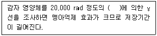
- 15C
- 60Co
- 17C
- 40K
(정답률: 71%)
59. 개량삼포식농법에 해당하는 작부방식은?
- 자유경작법
- 콩과작물의 순환농법
- 이동경작법
- 휴한농법
(정답률: 78%)
60. 비료의 엽면흡수에 대한 설명으로 옳은 것은?
- 잎의 이면보다 표피에서 더 잘 흡수된다.
- 잎의 호흡작용이 왕성할 때에 잘 흡수된다.
- 살포액의 pH는 알칼리인 것이 흡수가 잘 된다.
- 엽면시비는 낮보다는 밤에 실시하는 것이 좋다.
(정답률: 76%)
4과목: 식물보호학
61. 다음 중 농약과 농약병 뚜껑 색깔이 바르게 연결되지 않는 것은?
- 제초제 – 노란색(황색)
- 살충제 - 녹색
- 살균제 - 분홍색
- 생장조정제 – 적색
(정답률: 74%)
62. 다음 중 암발아 잡초로만 나열된 것은?
- 메귀리, 바랭이
- 독말풀, 별꽃
- 쇠비름, 강피
- 참방동사니, 향부자
(정답률: 67%)
63. 다음 중 종합적 방제의 의미로 볼 수 없는 것은?
- 모든 방제수단을 조화롭게 사용한다.
- 효과가 빨리 나오는 방제법을 우선적으로 적용한다.
- 생태학적 이론에 바탕을 두고 있다.
- 경제적 피해수준 이하로 억제·유지한다.
(정답률: 75%)
64. 벼 흰잎마름병과 관련이 없는 것은?
- 풍매 전반한다.
- 주로 잎 가장자리나 수공을 통해 침입한다.
- 병원균은 잡초에서 월동한다.
- 병원균은 세균이다.
(정답률: 48%)
65. 다음 중 애멸구가 매개하는 병으로 가장 옳은 것은?
- 콩 위축병
- 노균병
- 벼 줄무늬잎마름병
- 벼 오갈병
(정답률: 77%)
66. 일반적으로 벼 키다리병 방제를 위한 온탕침법의 가장 적당한 온도와 시간은?
- 70~75℃, 25분
- 60~65℃, 15분
- 50~55℃, 5분
- 40~45℃, 15분
(정답률: 61%)
67. 다음 중 해충의 천적으로서 기생성이 아닌 것은?
- 진디혹파리
- 온실가루이좀벌
- 굴파리좀벌
- 콜레마니진디벌
(정답률: 55%)
68. 다음에서 설명하는 해충은?
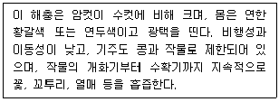
- 가로줄노린재
- 좁은가슴잎벌레
- 콩나방
- 조명나방
(정답률: 59%)
69. 다음 중 액상수화제에 대한 설명으로 옳은 것은?
- 농약 원제를 물 또는 메탄올에 녹이고 계면활성제나 동결방지제를 첨가하여 제제한 제형
- 수용성 고체 원제나 유안이나 망초, 설탕과 같이 수용성인 증량제를 혼합, 분쇄하여 만든 분말제제
- 물과 유기용매에 난용성인 농약 원제를 액상의 형태로 조제한 것으로 수화제에서 분말의 비산 등의 단점을 보완한 제형
- 농약 원제를 용제에 녹이고 계면활성제를 유화제로 첨가하여 제제한 제형
(정답률: 68%)
70. 다음 중 곤충이 페로몬에 끌리는 현상은?
- 주광성
- 주열성
- 주지성
- 주화성
(정답률: 75%)
71. 농약의 유효성분 조성에 따른 분류로 살균제에 해당되지 않는 것은?
- Triazole계
- Benzimidazole계
- Triazine계
- Anilide계
(정답률: 53%)
72. 다음 중 곤충의 소화기관으로 가장 거리가 먼 것은?
- 침샘
- 전장
- 기문
- 후장
(정답률: 76%)
73. 현재 논에서 발생하는 잡초는 일년생보다 다년생 잡초가 증가하였는데, 논 잡초의 초종변화에 가장 직접적인 요인은?
- 시비량의 감소
- 재배법의 변화
- 물관리 변동
- 동일 제초제의 연용
(정답률: 83%)
74. Poston 등은 해충의 밀도와 작물수량 간의 관계를 세 가지 유형으로 구분하였다. 다음 중 그 유형이 아닌 것은?
- 감수성 반응
- 저항성 반응
- 보상적 반응
- 내성적 반응
(정답률: 41%)
75. 다음에 대한 설명으로 옳은 것은?
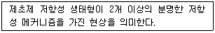
- 부정적교차저항성
- 내성
- 다중저항성
- 교차저항성
(정답률: 66%)
76. 도열병에 저항성이었던 품종이 몇 년이 지나 감수성이 되는 주된 원인으로 가장 옳은 것은?
- 칼륨비료의 과용
- 기상 및 토양조건의 변화
- 새로운 병원균 레이스의 출현
- 기주 교대
(정답률: 81%)
77. 식물병원균 중 진균에 의한 병해의 가장 일반적인 방제방법으로 옳지 않은 것은?
- 물리적 방제로 열 또는 광을 이용한다.
- 화학적 방제로 살균제를 사용한다.
- 생물적 방제로 미생물농약을 사용한다.
- 병원균의 매개체인 해충 방제를 위해 살충제를 사용한다.
(정답률: 59%)
78. 다음 중 일반적으로 곤충의 암컷 생식기관이 아닌 것은?
- 수정관
- 저정낭
- 여포
- 수란관
(정답률: 61%)
79. 다음 중 종자병의 진단법으로 가장 거리가 먼 것은?
- 습실처리법
- Plantibody법
- ELISA법
- PCR법
(정답률: 55%)
80. 다음 중 미국선녀벌레에 대한 설명으로 옳지 않은 것은?
- 2년에 1회 발생한다.
- 약충은 매미충의 형태로 백색에 가깝다.
- 포도나무에 피해가 크다.
- 왁스물질과 감로를 분비하며, 그을음병을 유발한다.
(정답률: 64%)
5과목: 종자관련법규
81. 종자관리요강상 규격묘의 규격기준에 대한 내용에서 감 묘목의 길이(cm)는? (단, 묘목의 길이 : 지제부에서 묘목선단까지의 길이로 한다.)
- 100 이상
- 80 이상
- 60 이상
- 40 이상
(정답률: 56%)
82. 종자산업법상 육묘업 등록의 취소 등에 대한 내용이다. ( ) 에 알맞은 내용은?
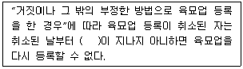
- 2년
- 3년
- 4년
- 5년
(정답률: 71%)
83. 종자관리요강상 사후관리시험의 기준 및 방법에서 검사항목에 해당하지 않는 것은?
- 품종의 순도
- 품종의 진위성
- 종자전염병
- 토양 입경 분석
(정답률: 84%)
84. 종자관리요강상 수입적응성시험의 대상작물 및 실시기관에서 인삼의 실시기관은?
- 농업기술실용화재단
- 한국생약협회
- 한국종균생산협회
- 국립산림품종관리센터
(정답률: 76%)
85. 종자검사를 받은 보증종자를 판매하거나 보급하려는 자는 해당 보증종자에 대하여 보증표시를 하여야 한다. 이에 따라 보증종자를 판매하거나 보급하려는 자는 종자의 보증과 관련된 검사서류를 작성일로부터 얼마 동안 보관하여야 하는가? (단, 묘목에 관련된 검사서류는 제외한다.)
- 6개월
- 1년
- 2년
- 3년
(정답률: 60%)
86. 종자검사요령상 시료 추출에 대한 내용이다. ( )에 알맞은 내용은?
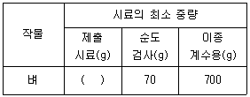
- 300
- 500
- 700
- 100
(정답률: 64%)
87. 보증서를 거짓으로 발급한 종자관리사의 벌칙은?
- 6개월 이하의 징역 또는 3백만원 이하의 벌금
- 1년 이하의 징역 또는 5백만원 이하의 벌금
- 1년 이하의 징역 또는 1천만원 이하의 벌금
- 2년 이하의 징역 또는 2천만원 이하의 벌금
(정답률: 80%)
88. 포장검사 및 종자검사의 검사기준에서 밀 포장검사의 검사시기 및 횟수는?
- 각 지역 농업단체에서 정한 날짜에 1회 실시
- 감수분열기부터 유숙기 사이에 1회 실시
- 완숙기로부터 고숙기 사이에 1회 실시
- 유숙기로부터 황숙기 사이에 1회 실시
(정답률: 71%)
89. 종자관리요강상 종자산업진흥센터 시설기준에서 성분분석실의 장비 구비조건으로 옳은 것은?
- 시료분쇄장비
- 균주배양장비
- 병원균 접종장비
- 유전자판독장비
(정답률: 62%)
90. 포장검사 병주 판정기준에서 고구마의 특정병은?
- 풋마름병
- 흑반병
- 역병
- 후사리움위조병
(정답률: 62%)
91. 식물신품종 보호법상 거짓표시의 죄에 대한 내용이다. ( ) 에 알맞은 내용은?
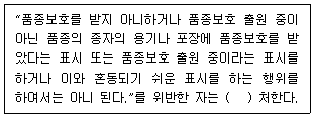
- 6개월 이하의 징역 또는 1백만원 이하의 벌금
- 1년 이하의 징역 또는 6백만원 이하의 벌금
- 2년 이하의 징역 또는 1천만원 이하의 벌금
- 3년 이하의 징역 또는 3천만원 이하의 벌금
(정답률: 56%)
92. 품종보호권 또는 전용실시권을 침해한 자의 벌칙은?
- 7년 이하의 징역 또는 1억원 이하의 벌금
- 5년 이하의 징역 또는 1천만원 이하의 벌금
- 3년 이하의 징역 또는 5백만원 이하의 벌금
- 1년 이하의 징역 또는 3백만원 이하의 벌금
(정답률: 69%)
93. 종자관리요강상 사진의 제출규격에 대한 내용이다. ( )에 알맞은 내용은?
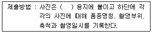
- A1
- A2
- A4
- A6
(정답률: 84%)
94. 종자관리사의 자격기준 등에 대한 내용이다. ( )에 알맞은 내용은?
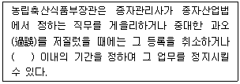
- 3개월
- 6개월
- 1년
- 2년
(정답률: 41%)
95. 식물신품종 보호법상 절차의 무효에 대한 내용이다. ( )에 알맞은 내용은?
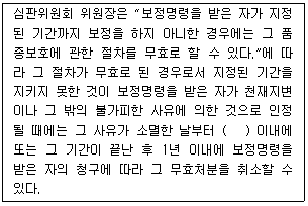
- 3일
- 7일
- 10일
- 14일
(정답률: 74%)
96. 식물신품종 보호법상 거절결정 또는 취소결정의 심판에 대한 내용이다. ( )에 알맞은 내용은?
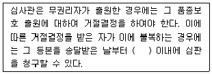
- 10일
- 30일
- 50일
- 90일
(정답률: 81%)
97. 종자검사요령상 수분의 측정에서 저온항온건조기법을 사용하게 되는 종에 해당하는 것은?
- 시금치
- 상추
- 부추
- 오이
(정답률: 52%)
98. 종자산업법상 종자업의 등록 등에 대한 내용이다. ( )에 해당하지 않는 내용은?
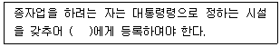
- 국립생태원장
- 시장
- 군수
- 구청장
(정답률: 78%)
99. 식물신품종 보호법상 품종보호료에 대한 내용이다. ( )에 알맞은 내용은?
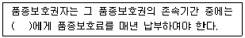
- 농업기술실용화재단장
- 농촌진흥청장
- 농림축산식품부장관
- 국립농산물품질관리원장
(정답률: 64%)
100. 과수와 임목의 경우 품종보호권의 존속기간은 품종보호권이 설정등록된 날부터 몇 년으로 하는가?
- 5년
- 10년
- 25년
- 30년
(정답률: 79%)